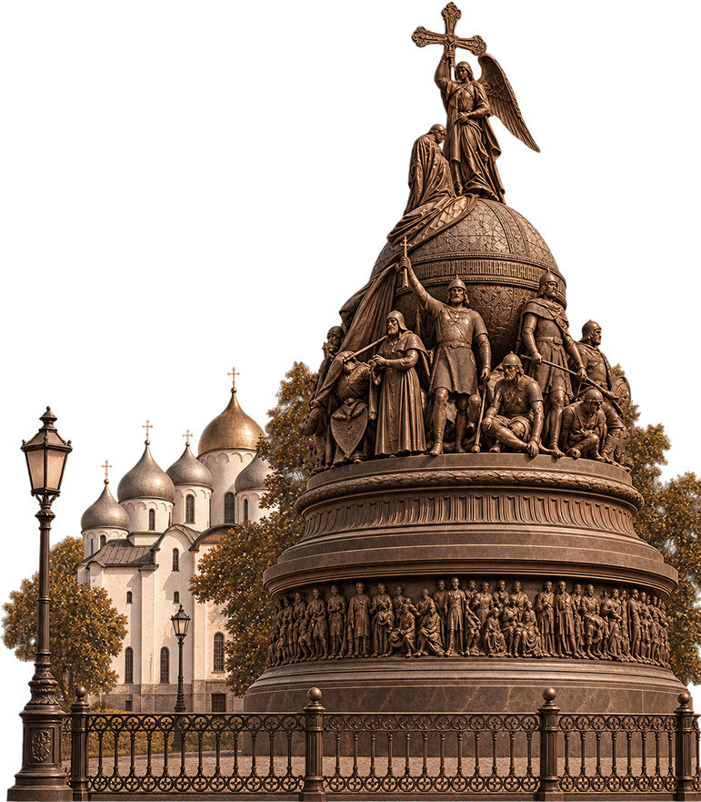
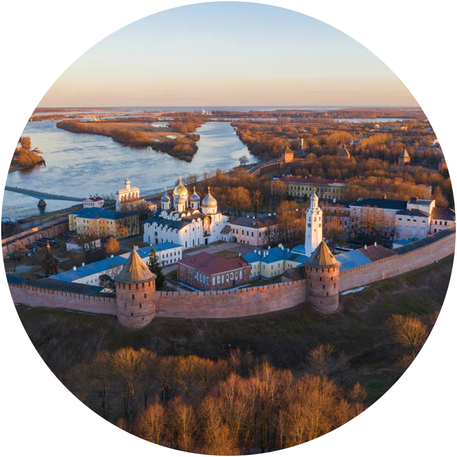
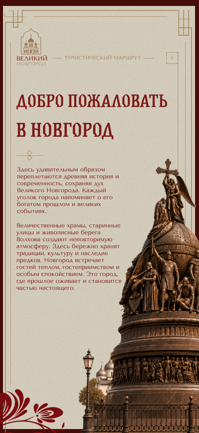
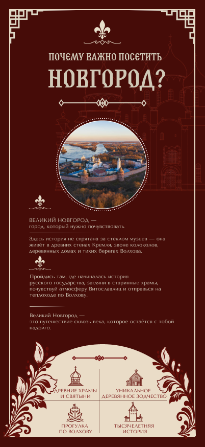

ДОБРО ПОЖАЛОВАТЬ В НОВГОРОД
Здесь удивительным образом переплетаются древняя история и современность, сохраняя дух Великого Новгорода. Каждый уголок города напоминает о его богатом прошлом и великих событиях.
Величественные храмы, старинные улицы и живописные берега Волхова создают неповторимую атмосферу. Здесь бережно хранят традиции, культуру и наследие предков.


ВЕЛИКИЙ НОВГОРОД — город, который нужно почувствовать
Здесь история не спрятана за стеклом музеев — она живёт в древних стенах Кремля, звоне колоколов, деревянных домах и тихих берегах Волхова.
Пройдись там, где начиналась история русского государства, загляни в старинные храмы, Витославлицы и отправься на теплоходе по Волхову.
Великий Новгород — город, который остаётся с тобой надолго.
 ДРЕВНИЕ ХРАМЫ И
ДРЕВНИЕ ХРАМЫ ИСВЯТЫНИ
 УНИКАЛЬНОЕ
УНИКАЛЬНОЕДЕРЕВЯННОЕ ЗОДЧЕСТВО
 ПРОГУЛКА
ПРОГУЛКАПО ВОЛХОВУ
 ТЫСЯЧЕЛЕТНЯЯ
ТЫСЯЧЕЛЕТНЯЯИСТОРИЯ

